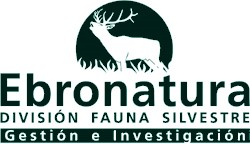

José Luis Labarta Sauco, 46 años
Dirección: C/Carlos Saura 17 5D, 50018 Zaragoza.
Telefono: 659 805 332
Correo electrónico: jllabarta@gmail.com
Licenciado en Geografía y ejerciendo como Técnico-analista en G.I.S., trabajando como responsable de cartografía, I.T. y administración de redes con más de 10 usuarios, formando parte de equipos multidisciplinares para el desarrollo de propuestas de concursos públicos y privados. Responsable de la documentación, creación y gestión de bases de datos geográficos. Cuento con una larga trayectoria profesional con más de 20 años de experiencia demostrable en el sector de la consultoría además de ser una persona adaptable a las nuevas situaciones, resolutivo y capaz de afrontar nuevos retos.
| Empresa/Fecha | Funciones principales |
|---|---|
|
BBA1 International Ingenieering Enero 2018 - actualmente |
|
|
Consultor independiente Mayo 2016 - enero 2018 |
|
|
Ebronatura S.L. Febrero 2002 - Mayo 2018  |
|
|
TRAGSA Junio 1996 - Octubre 2001 |
|
| Título académico | Organismo | Tiempo |
|---|---|---|
| Master en Sistemas de Información Geográfica | Esri España y U.C.A.M. | 2020-2021 |
| Certificado de Aptitud Pedagógica | Universidad de Zaragoza | 2002-2003 |
| Licenciatura en Geografía | Universidad de Zaragoza | 1996 - 2000 |
| Nombre | Teléfono de contacto | Email de contacto |
|---|---|---|
| Gonzalo Vidal | 676 924 778 | gvidal@solariaenergia.com |
| Javier Marco Martínez | 976 28 18 81 | javiermarco@ebronatura.com |
| Javier Alonso Braña | 976 71 66 27 | jalonso@aragon.es |
| Idiomas |
|
|---|---|
| Seminarios y otros |
|
| Informática |
|
Deportes (alpinismo, running, ciclismo), viajes, lectura, además de cooperar con el Ayuntamiento de Manchones para la creación y puesta en marcha de una página web y eventos deportivos, actualmente soy socio fundador y presidente de la Asociación El Cantón de Manchones y entre otras colaboraciones esta la de voluntariado con Cruz Roja Española.